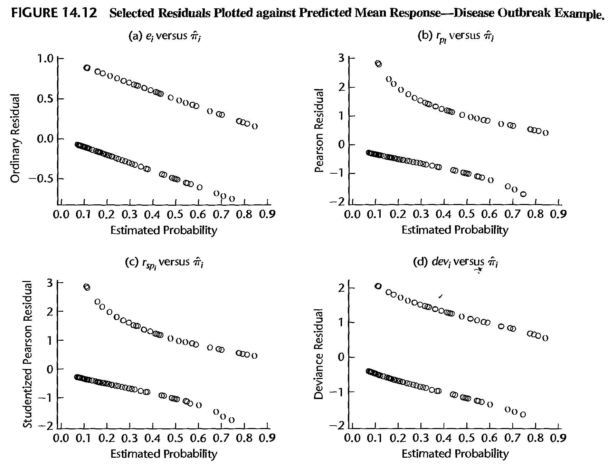
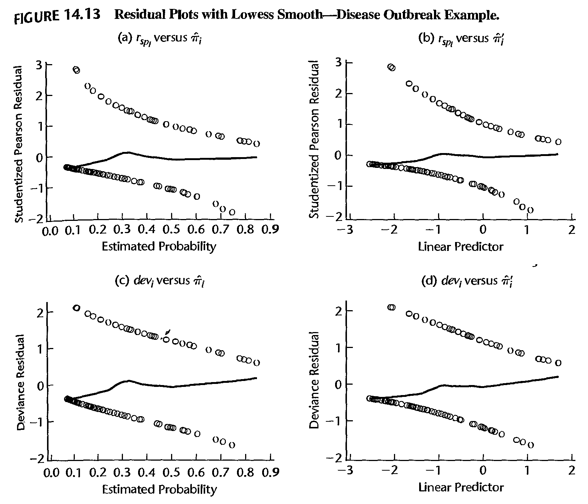
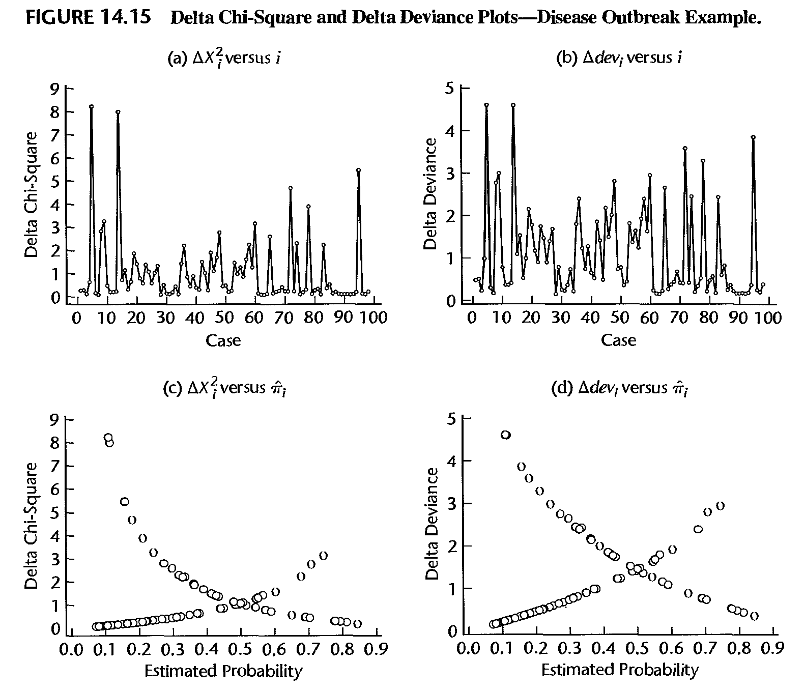

Stat 435 Lecture Notes 5a
Xiongzhi Chen
Washington State University

Logistic regression: diagnostics
Recap on model and assumptions
- \(Y\) is a Bernoulli random variable and \(E\left( Y=1|X\right) =p\left( X\right)\)
- Population model: \[\begin{equation} \operatorname{logit}\left( p\left( X\right) \right) =\log\left( \frac{p\left( X\right) }{1-p\left( X\right) }\right) =\beta_{0}+\beta_{1}X \end{equation}\] or equivalently \[\begin{equation} p\left( X\right) =\frac{\exp\left( \beta_{0}+\beta_{1}X\right) } {1+\exp\left( \beta_{0}+\beta_{1}X\right) }=\frac{1}{1+\exp\left( -\beta_{0}-\beta_{1}X\right) } \end{equation}\]
- Sample version of the model: \[ \operatorname{logit}\left( p\left( x_{i}\right) \right) =\beta_{0}+\beta_{1}x_{i} \] for the \(i\)th observation \(\left( x_{i},y_{i}\right)\) of \(\left(X,Y\right)\).
Recap on assumptions
The assumptions of the model are:
Each \(y_{i}\) is Bernoulli random variable with expectation \(\mu_{i}=p\left( x_{i}\right)\)
\(\operatorname{logit}\left( p\left( X\right) \right)\) is a linear function of \(X\), i.e., \(\operatorname{logit}\left( p\left( x_{i}\right)\right)\) is a linear function of \(x_{i}\) for all \(1\leq i\leq n\)
The pairs \(\left\{ \left( x_{i},y_{i}\right) \right\} _{i=1}^{n}\) are independent
Fitted values
Once an estimate \(\left( \hat{\beta}_{0},\hat{\beta}_{1}\right)\) of \(\left( \beta_{0},\beta_{1}\right)\) is obtained, we have the estimated model \[ \operatorname{logit}\left( \hat{p}\left( x_{i}\right) \right) =\hat{\beta}_{0}+\hat{\beta}_{1}x_{i}, \] where the mean or probability of success \(\mu_i\) for each \(y_i\) is estimated by \[ \hat{\mu}_{i}=\hat{p}\left( x_{i}\right) =\frac{1}{1+\exp\left( -\hat {\beta}_{0}-\hat{\beta}_{1}x_{i}\right) } \]
Ordinary residuals
Formula: \[ e_{i}=\left\{ \begin{array} {lll} 1-\hat{\mu}_{i} & if & y_{i}=1\\ -\hat{\mu}_{i} & if & y_{i}=0 \end{array} \right. \]
Note: the distribution of \(\left\{ e_{i}\right\} _{i=1}^{n}\) is unknown even if the fitted model is correct
Pearson residuals
- Formula: \[ r_{i}=\frac{y_{i}-\hat{\mu}_{i}}{\sqrt{\hat{\mu}_{i}\left( 1-\hat{\mu}_{i}\right) }}. \] Note that \(\sqrt{\hat{\mu}_{i}\left( 1-\hat{\mu}_{i}\right) }\) can be thought of as an estimate of the standard deviation of \(y_{i}-\hat{\mu}_{i}\)
- Studentized Pearson residuals: \[ \tilde{r}_{i}=\frac{r_{i}}{\sqrt{1-h_{ii}}}, \] where \(h_{ii}\) is the \(i\)-th diagonal entry of \[ H=W^{1/2}X\left( X^{\prime}WX\right) ^{-1}X^{\prime}W^{1/2} \] and \(W\) is the \(n\times n\) diagonal matrix with entries \(\hat{\mu}_{i}\left(1-\hat{\mu}_{i}\right)\) and \(X\) is the \(n\times p\) design matrix
Deviance residuals
- The “probability mass function (PMF)” of \(y_{i}\), or the likelihood function of \(y_i\), is \[ f_i\left( y_{i}\right) =p_{i}^{y_{i}}\left( 1-p_{i}\right) ^{1-y_{i}} \]
- Let the estimated log-likelihood function of \(y_i\) be denoted by \[\ln \hat{f}_i (y_i)= y_{i}\ln\hat{\mu}_{i}+\left( 1-y_{i}\right) \ln\left( 1-\hat{\mu}_{i}\right)\]
- The model deviance is \[\begin{equation} D=-2\sum_{i=1}^{n} \ln \hat{f}_i (y_i) =\sum_{i=1}^{n}d_{i}^{2}, \end{equation}\] where the \(i\)th deviance residual is \[ d_{i}=\operatorname{sgn}\left( y_{i}-\hat{\mu}_{i}\right) \sqrt{-2 \ln \hat{f}_i (y_i) } \]
Deviance residuals
The model deviance \(D\) is equal to \[ -2\times\left[ \ln L\left( \text{Reduced model}\right) -\ln L\left( \text{Full model}\right) \right] , \] where the “Reduced model” is the model under consideration and the “Full model” is the full nonparametric model of \(E\left( y_{i}\right) =\mu_{i} = \Pr(Y=1)\)
Under appropriate conditions, \(D\) approximately has a chi-square distribution when the Reduced model is correct. \(D\) itself can be used to check if the postulated linear model is appropriate.
Checking model fit

Checking model fit
- If the logistic model is correct, then \(E\left( y_{i}\right) =\mu_{i}\) and asymptotically \[ E\left( y_{i}-\hat{\mu}_{i}\right) =0 \]
- Thus, if the model is correct, a lowess smooth fit of the plot of the residuals against the estimated probabilities (or against the linear predictor \(\hat{\eta}_{i}=\hat{\beta}_{0}+\hat{\beta}_{1}x_{i}\)) should result approximately in a horizontal line with zero intercept
- Any significant departure from this suggests that the model may be inadequate. In practice, either the ordinary residuals, the Pearson residuals, or the studentized residuals can be used for this purpose
Checking model fit

Checking influential observations
- Recall Pearson chi-square goodness of fit statistic, in the setting of logistic regression, as \[ \xi^{2}=\sum_{i=1}^{n}\frac{\left( y_{i}-\hat{\mu}_{i}\right) ^{2}}{\hat {\mu}_{i}\left( 1-\hat{\mu}_{i}\right) }=\sum_{i=1}^{n}r_{i}^{2} \]
- Denote by \(\xi_{\left( i\right) }^{2}\) the value of the Pearson chi-square goodness of fit statistic obtained when observation \(i\) is deleted
- Denote by \(D_{\left( i\right) }\) the value of the model deviance obtained when observation \(i\) is deleted
Checking influential observations
- Define the “delta chi-square statistic” as \[ \Delta\xi_{\left( i\right) }^{2}=\xi^{2}-\xi_{\left( i\right) }^{2} \] and “delta deviance statistic” as \[ \Delta D_{\left( i\right) }=D-D_{\left( i\right) }. \] These quantities measure the influence of the \(i\)th observation on model fitting
- Usually, these statistics are plotted against the observation number \(i\), against \(\hat{\mu}_{i}\), or against \(\hat{\eta}_{i}=\hat{\beta}_{0} +\hat{\beta}_{1}x_{i}\). Extreme values appear as spikes when plotted against \(i\), or as outliers in the upper corners of the plot when plotted against \(\hat{\mu}_{i}\) or \(\hat{\eta}_{i}\)
Checking influential observations

Checking influential observations
Cook’s distance is defined as \[ \delta_{i}=\frac{r_{i}^{2}h_{ii}}{p\left( 1-h_{ii}\right) ^{2}} \] where
- \(h_{ii}\) is the \(i\)-th diagonal entry of \[ H=W^{1/2}X\left( X^{\prime}WX\right) ^{-1}X^{\prime}W^{1/2} \]
- \(W\) is the \(n\times n\) diagonal matrix with entries \(\hat{\mu}_{i}\left( 1-\hat{\mu}_{i}\right)\) and \(X\) is the \(n\times p\) design matrix.
License and session Information
> sessionInfo()
R version 3.5.0 (2018-04-23)
Platform: x86_64-w64-mingw32/x64 (64-bit)
Running under: Windows 10 x64 (build 19041)
Matrix products: default
locale:
[1] LC_COLLATE=English_United States.1252
[2] LC_CTYPE=English_United States.1252
[3] LC_MONETARY=English_United States.1252
[4] LC_NUMERIC=C
[5] LC_TIME=English_United States.1252
attached base packages:
[1] stats graphics grDevices utils datasets methods
[7] base
other attached packages:
[1] knitr_1.21
loaded via a namespace (and not attached):
[1] compiler_3.5.0 magrittr_1.5 tools_3.5.0
[4] htmltools_0.3.6 revealjs_0.9 yaml_2.2.0
[7] Rcpp_1.0.0 stringi_1.2.4 rmarkdown_1.11
[10] stringr_1.3.1 xfun_0.4 digest_0.6.18
[13] evaluate_0.12